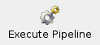
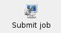

Index
Index

Executing and storing a QSAR Pipeline
During creation of a QSAR pipeline as explained before, NO data will be processed, i.e. no input data will be read, no models training, no feature selection or validations done UNTIL you choose to execute your pipeline as shown below.
This way, you can modify your pipeline, e.g. add more models or feature selections, without having to wait for the previous steps to be completed.
Direct pipeline-execution
|  | In order to directly execute your created pipeline, just click on the respective button. |
Storing a QSAR pipeline
 | In order to store a QSAR pipeline, just click onto the icon. You will then be show a dialog which lets you choose the filename and format.
You can either save the pipeline in an uncompressed or in an compressed format. |
In the former case a configuration-file (*.conf) will be written. If any input data was already read or any models were already created, they will be automatically saved to separate files using the same basename as specified in the dialog but with extensions *.dat, *.mod.
If you choose to save your pipeline to a compressed archive (e.g. tar.gz), the same files will be created (in a temporary folder, which can be set in the preferences dialog) and compressed to the specified archive.
Submitting pipeline to a cluster
|  | If you started this program on a cluster-frontend, you can directly submit the pipeline you created to a queue.
Make sure to have set the necessary options for this within the prefences dialog. |
After choosing a filename in the dialog that will open, the pipeline will be stored and submitted to your cluster's queue.
If you chose to compress the pipeline to an archive, this will be done automatically after the grid job completed.